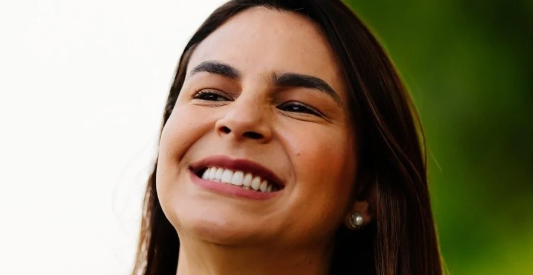
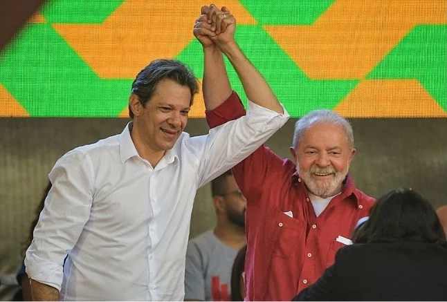
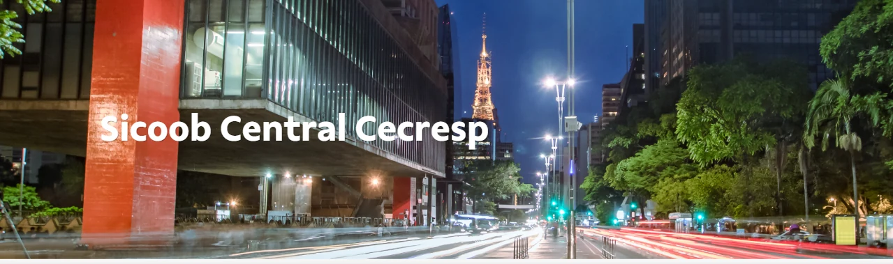
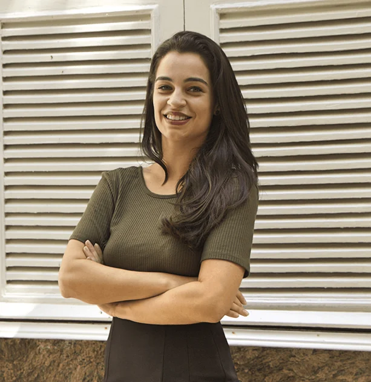

Eu só entendi como participar quando explicaram na associação.
Moderação · aprofundamento
Que informação fez falta no primeiro contato?
Metodologia
Como funciona
O painel acompanha grupos selecionados pelos critérios da pesquisa. A moderação profissional introduz temas, estimula o diálogo e aprofunda respostas conforme as conversas evoluem.
Recrutamento
Os grupos são montados conforme o público de interesse, com critérios como região, escolaridade ou uso de um serviço.
Discussão contínua
A equipe lança perguntas e materiais no WhatsApp. Os participantes conversam na hora ou respondem quando tiverem disponibilidade.
Análise e entregas
A equipe interpreta as respostas, compara pontos de vista dentro de um grupo e entre grupos e produz relatórios na frequência acordada.
O que o formato permite
Participar pelo celular sem deslocamento, incluir públicos de regiões diferentes, acompanhar reações a acontecimentos e testar peças de comunicação, argumentos ou propostas de políticas públicas.
Como interpretar os resultados
O POMT é qualitativo. Os resultados ajudam a entender como os participantes elaboram suas opiniões e como elas evoluem. Estimar a proporção dessas opiniões na população requer um desenho quantitativo adequado.
Aplicações
O POMT em campo
Projetos de 2022, 2024 e 2026 com diferentes desenhos de grupo, cadências de acompanhamento e entregas.
2026
Pré-campanha ao Governo de São Paulo
Acompanhamento da pré-campanha de Fernando Haddad (PT), com avaliação de materiais e propostas e novas perguntas todos os dias.
120 participantes
8 grupos
30 temas
De 1º de julho a 15 de agosto de 2026, com entregas semanais ao longo de seis semanas. Mídia Pull.
2026
Eleição para o Governo de Rondônia
Acompanhamento da campanha de Marcos Rogério (PL), com avaliação do candidato, dos concorrentes e dos programas eleitorais.
96 participantes
8 grupos
35 relatórios diários
De 17 de agosto a 2 de outubro de 2026. As entregas diárias subsidiaram o acompanhamento da campanha. Vitorino & Mendonça.
2024
Eleição para a Prefeitura de Porto Alegre
Acompanhamento da campanha de Juliana Brizola (PDT), com avaliação da candidata, dos concorrentes e dos programas eleitorais.
60 participantes
4 grupos
49 relatórios diários
De 29 de julho a 5 de outubro de 2024, com entregas diárias para a equipe de campanha. Baselab.

2024
Eleição para a Prefeitura de Porto Velho
Acompanhamento da campanha de Mariana Carvalho (União Brasil), com avaliação da candidata e dos concorrentes.
75 participantes
5 grupos
15 relatórios diários
De 7 a 26 de outubro de 2024, com entregas diárias para a equipe de campanha. Perfil Pesquisas · Vitorino & Mendonça.

Mar–jul 2022
São Paulo pré-eleitoral
Acompanhamento de percepções políticas, hábitos de informação e imagem de pré-candidatos entre eleitores paulistas.
100 participantes
5 grupos
18 relatórios semanais
De 1º de março a 17 de julho. Quatro rodadas de novas perguntas por semana e 40 temas explorados. NovaSB Comunicação.
Ago–set 2022
Governo de São Paulo
Acompanhamento diário da campanha de Fernando Haddad ao governo estadual e da recepção de materiais e propostas.
120 participantes
8 grupos
39 relatórios
De 1º de agosto a 30 de setembro. Novas perguntas diárias, 39 temas explorados e entregas de terça a sábado. Mídia Pull.
Abr–mai 2022
Piloto no Rio de Janeiro
Teste do método com eleitores fluminenses para acompanhar percepções sobre pré-candidatos, partidos e alianças.
90 participantes
6 grupos
6 relatórios semanais
De 13 de abril a 16 de maio. Quatro rodadas de novas perguntas por semana e 18 temas explorados.
Cooperativismo de crédito
Pesquisa qualitativa complementar

2025
Relações entre a Cecresp e as cooperativas filiadas
Estudo sobre as relações institucionais entre a Central e suas filiadas, em um contexto de mudanças regulatórias e de transição para o modelo de cooperativa financeira.
31 cooperativas
Entrevistas em profundidade
Relatório com recomendações
Em junho e julho de 2025, foram entrevistados dirigentes e presidentes. O relatório analisou a trajetória da Central, a integração entre as cooperativas, a gestão democrática e as perspectivas de estratégia e inovação. Sicoob Central Cecresp.
Cobertura
POMT na imprensa
Reportagens que recorreram a pesquisas com o POMT para cobrir as eleições no Rio de Janeiro e o debate político nacional.
CartaCapital
Corpo fechado
Reportagem de capa de Fabíola Mendonça sobre como apoiadores de Jair Bolsonaro reagiram a episódios que envolveram o ex-presidente. A matéria se apoia em pesquisa com grupos focais contínuos no WhatsApp.
Estimativas históricas. Solicite os valores atuais para o seu projeto.
1 a 6 grupos
R$ 6.500 por grupo/mês
7 a 12 grupos
R$ 5.850 por grupo/mês
Mais de 12 grupos
R$ 5.200 por grupo/mês
Equipe do painel
Coordenação

Diretora geral
Carolina de Paula
Doutora em Ciência Política pelo IESP-UERJ. Foi consultora da UNESCO em avaliações de impacto social e atua em desenho de pesquisa qualitativa, moderação de grupos focais, entrevistas em profundidade e formação em metodologia.
Doutor em Ciência Política pela City University of New York. Professor de Ciência Política do IESP-UERJ, com experiência em comportamento político e eleitoral, mídia e política, ação afirmativa e relações raciais.